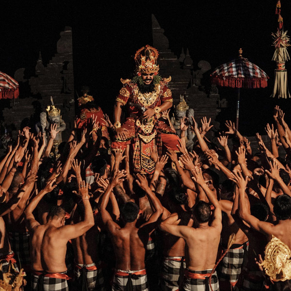
Ubud Culture Day
Morning Barong, Ubud crafts, the Batuan temple, and an evening Kecak dance.
Discover Bali with private, fully customizable day tours led by local drivers. From Ubud's rice terraces to hidden temples, waterfalls, and beaches across the island.
Bali's cultural heart in a single day. Rice terraces, sacred temples, the monkey forest, and local artisan villages, all at your own pace with a private car and local driver.

Morning Barong, Ubud crafts, the Batuan temple, and an evening Kecak dance.
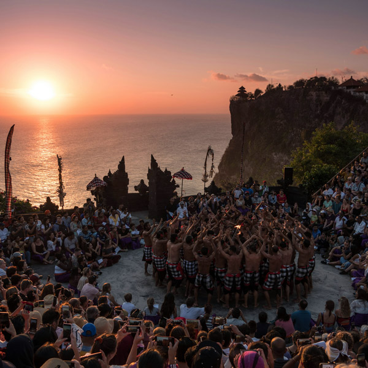
Watersports, the GWK statue, Pandawa Beach, and the sunset Kecak dance at Uluwatu.
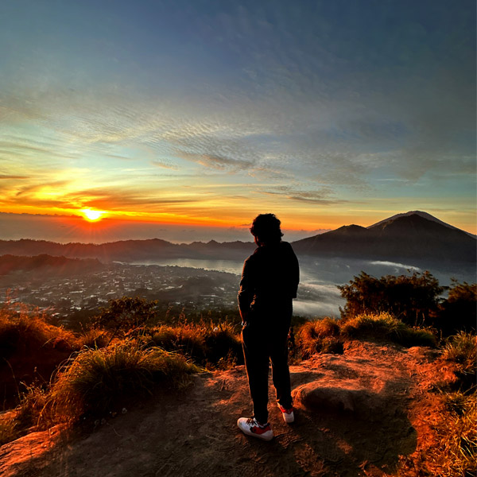
A Mount Batur sunrise trek, a volcano breakfast, and a hot spring soak.
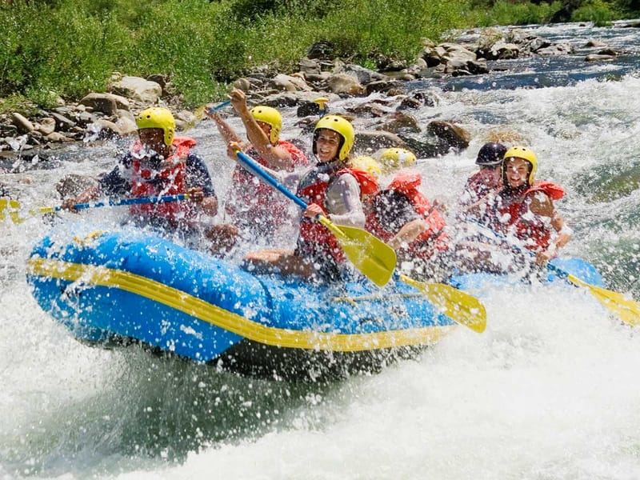
Ayung river rafting, rice terraces, luwak coffee, and a waterfall.
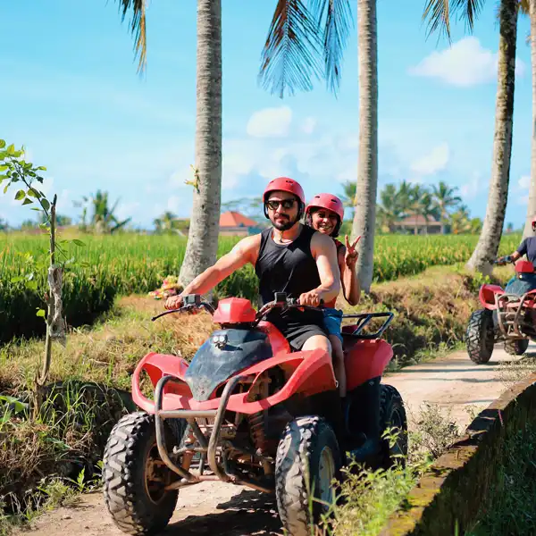
A jungle ATV ride, Bali Zoo, Bali Bird Park, and the Tegenungan waterfall.
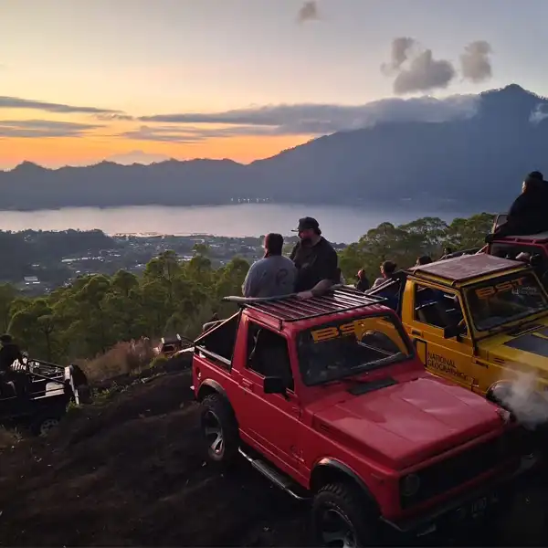
A 4x4 Batur sunrise, Penglipuran village, and temples back to Ubud.
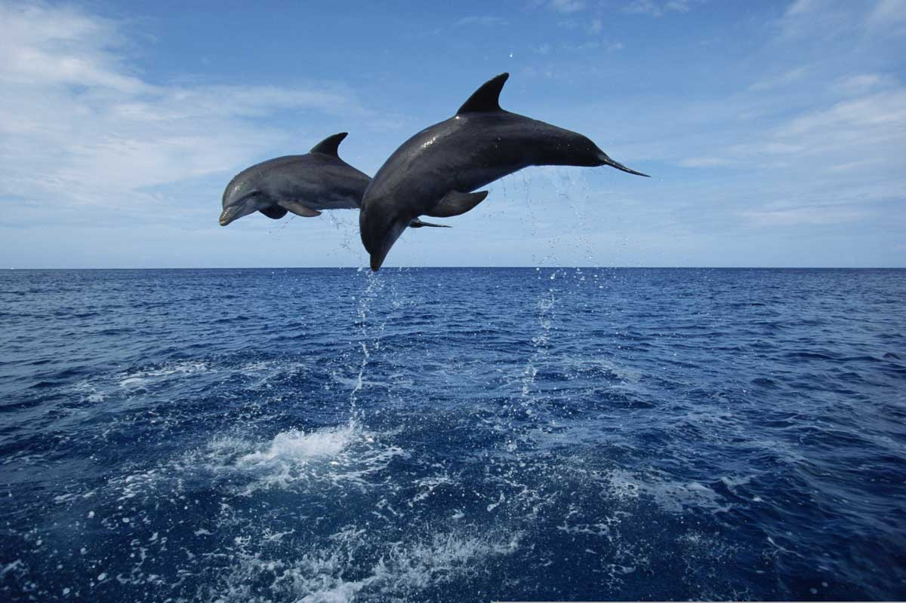
A Lovina dolphin sunrise, the Banjar hot springs, and Sekumpul waterfall.
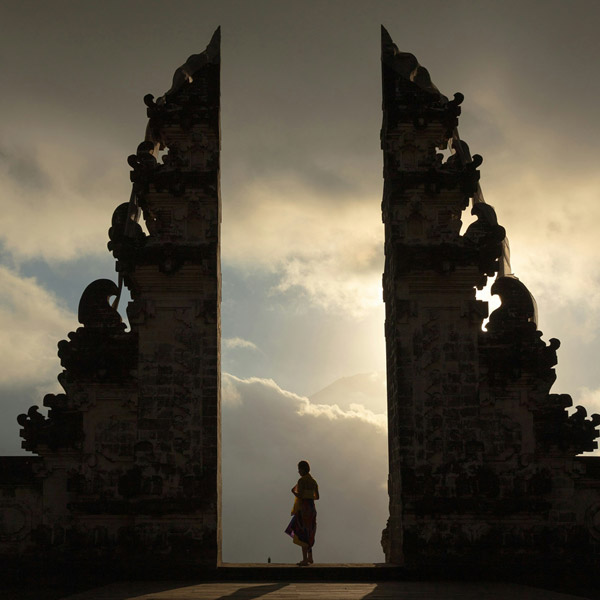
Royal water palaces, bamboo forests, and the gates of Lempuyang.
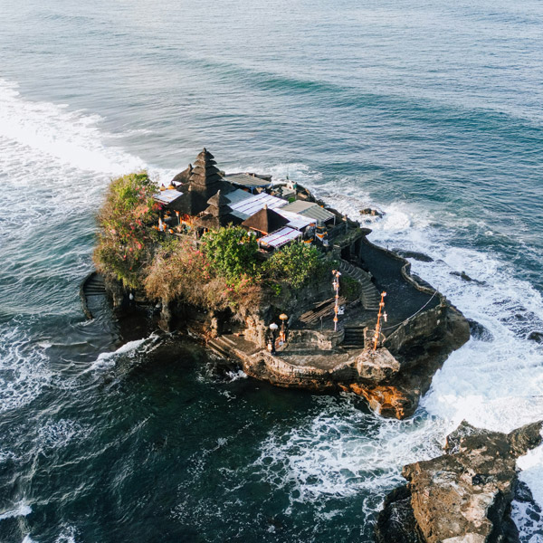
Lakeside temples, mountain views, and the Tanah Lot sunset.
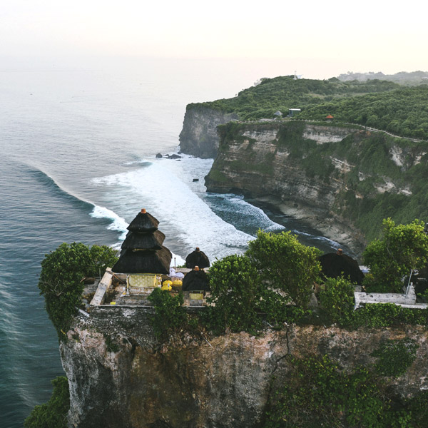
Quiet Bukit beaches and clifftops — Tegal Wangi, Green Bowl, Balangan, and Bingin.
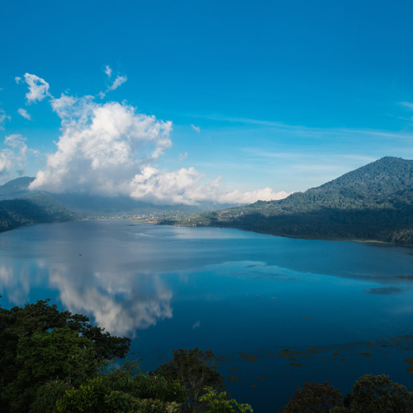
Twin lakes and a trail of hidden jungle waterfalls in Bali's green north.